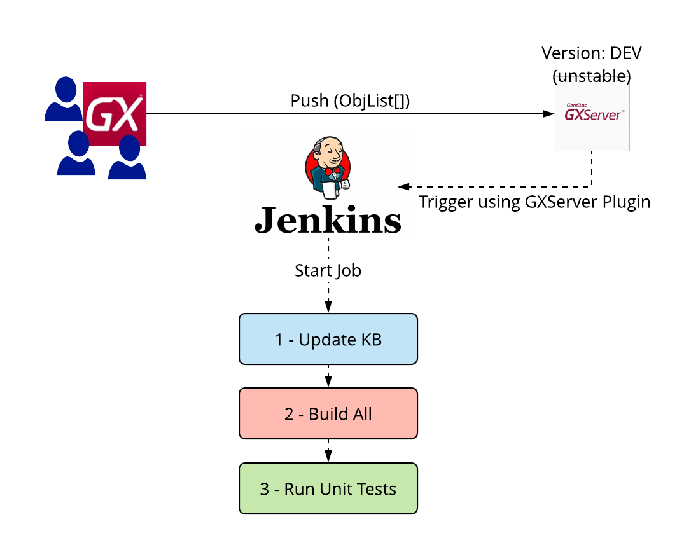
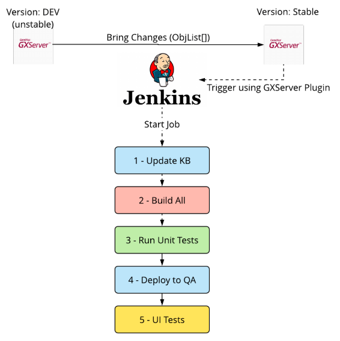

When working on an agile process you will need to define the branching/versioning model for your project with GeneXus and GeneXus Server. There are four different ways to work with versions, each one depending on team size, Knowledge Base size, and specific project needs. For agile development, it is strongly recommended to start using two different branches: Trunk (Development) and Stable versions, where Stable is the consolidated Knowledge Base with all the features (already developed) that you decided to be part of the release. On the other hand, Trunk is the "master" branch, where developers are working on new features and bug fixes every day. The stable version will typically have the entire pipeline automated on each stage, so after you “merge” (bring changes) from Trunk, you want your tests to start running automatically under different stages to check the quality of the new version. Let’s discuss how to do it. Note that you don’t need to be Agile to take advantage of this process, this is just a simple way to start working on your pipeline to boost productivity in your development process using GeneXus and GeneXus Server. You will probably need to adjust branch/version strategy and automation based on your development needs. Additionally, the names and amounts of versions are just a matter of consensus inside each organization, what matters is to have a defined name for each type of branch and that the team is aware of the branching model. Trunk / Development versionTrunk version is typically where developers are coding new features and/or fixing some bugs (when using TBD - Trunk Based Development). Those changes can be made over different objects by many developers, which means that they will make commits to this branch often (at least it is recommended to do it daily). The best way to work in this version is to make sure that all developer's changes are integrated frequently, to be sure that the system is always in a “buildable state” and the quality of the code in your Knowledge Base is respecting good development practices. So, depending on how often your team commits changes, it is highly recommended to make Continuous Integration with the Development branch. By doing so, your process will have an automatic check that ensures that recent changes don’t break the build and still respect quality standards. If you have a Continuous Integration server like Jenkins, the first thing to do is to add some triggers, that will be listening for new changes. So, in this case, the pipeline should run (at least) the following steps:
 There is an optional (and recommended) 4th step which is running Static Checks to see if they are compliant with good practices (i.e. KB Doctor tool). Stable versionThis version usually hosts the main changes that you decided to be part of the new consolidated version (probably for a new release). Those changes are typically a set of commits from other versions (i.e. the Development branch) made by one or more developers. This time, not also you want to automatically build your KB and check quality standards, but also to run different tests (API tests and UI tests). As a result, every time you introduce changes to this version, the pipeline will check that it is in a “deployable" state and it is functional. It is recommended to use the same pipeline jobs defined in Development version plus adding some steps to deploy your application to QA environments, and run UI tests after that (steps 4 and 5):  After this, if all tests are successful you will have a deployable release ready. In case you don’t have all tests automated (or you don’t have an automated test at all), this version is ready to be tested manually.
|
| Backlinks | ||
| CI / CD integration for Unit Tests | CI / CD integration for Unit Tests (GeneXus 17 upgrade 2 and prior) | Toc:DevOps in GeneXus |
| Toc:GXtest v4 | Methodology |